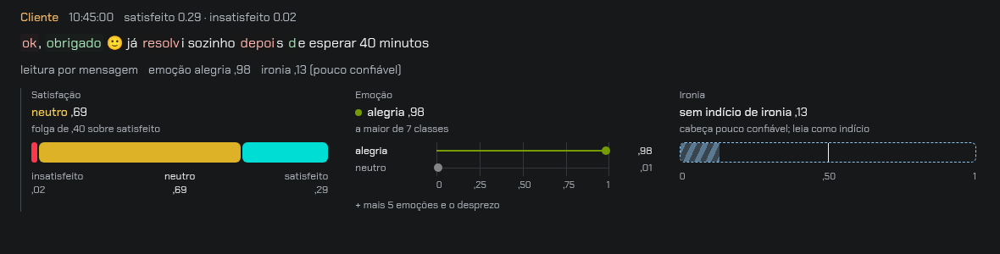

Guia de uso¶
O Fraus ajuda a examinar atendimentos de chatbot e estima satisfação a partir das conversas. Não pergunta a nota ao cliente, não revela seu estado real e não avalia o desempenho de atendentes. Para entender a evidência e seus limites, consulte o cartão do modelo e as limitações.
Acesso e permissões¶
A página inicial (/) apresenta o método, exemplos e limites. Conhecer a
análise percorre a apresentação; Entrar ou Entrar no Fraus abre
/entrar, e Criar conta abre /cadastrar. Os exemplos vêm de um snapshot
local: não são uma consulta aos atendimentos da sua conta.
Quando o login estiver habilitado, entre com e-mail e senha. No cadastro,
informe nome, e-mail e senha de pelo menos oito caracteres; o Código de
acesso pode ser exigido pela instalação. Use somente o código que recebeu
da administração. Um link de equipe (/convite/[token]) mostra equipe, papel,
canais e validade; entre ou crie a conta e aceite o convite com uma sessão de
usuário válida. Login não configurado não permite aceitar convite por uma
credencial técnica. Não envie senhas ou chaves junto com arquivos de atendimento.
Existem duas permissões diferentes:
- Papel global:
usuario(analista) oudev(desenvolvedor). Ambos têm as tarefas de acompanhamento, análise e a tela Modelo. Integrações e Configurações, gerar a chave do Tars e remover um atendimento exigemdev. Algumas abas de Operação também são exclusivas dedev. - Papel na equipe: proprietário, gestor ou membro. Essa hierarquia governa
ações sobre a equipe; ser proprietário não transforma a conta em
dev. Controles de gestão dependem do papel informado pelo servidor, não apenas de conseguir abrir Operação.
Os canais autorizados também delimitam quais conversas cada pessoa pode ver. Uma conta criada por convite começa sem acesso às conversas; aceitar o convite atribui os canais cadastrados na equipe, respeitando políticas administrativas explícitas. Equipe sem canais não libera todo o histórico. Se faltar acesso, peça a quem administra a instalação que confira a equipe e os canais — não é motivo para reenviar os mesmos dados.
Na lateral ficam Visão geral, Atendimentos, Analisar, Grafo e
Modelo, também para usuario. Abra o menu da conta, no rodapé, para
Operação, Integrações e Configurações conforme sua permissão. Documentação
aparece quando há endereço configurado; Sair, quando há usuário conectado.
Usar tema claro e Usar tema escuro alternam a aparência da dashboard. A preferência fica neste navegador; a apresentação e as páginas de acesso continuam escuras. Isso não comprova legibilidade no projetor da banca: o ensaio físico continua necessário.
Analisar um arquivo¶
- Abra Analisar e arraste o arquivo à área de envio ou use Escolher arquivo. O seletor aceita CSV/TSV, planilhas XLSX/XLSM, JSON/JSONL, TXT, DOCX e PDF; a identificação do conteúdo depende do formato real do arquivo. Conversas exportadas do WhatsApp entram como arquivo de texto.
- Aguarde a leitura. Há limite de 200.000 bytes por arquivo; se a tela informar excesso, divida o conteúdo em partes menores preservando as conversas e seus horários.
- Se a associação das colunas for confiável para o servidor, a análise segue automaticamente. Com horários válidos, a tela solicita também a gravação. Não existe uma segunda confirmação manual antes dessa tentativa de salvar.
- Se houver dúvida, aparece Conferir colunas. Nada foi gravado nessa etapa. Confira Fala e Quem falou; em Mais colunas: data, conversa e canal, ajuste os campos disponíveis. Sem identificador de conversa, o arquivo é tratado como uma conversa só. Confira também a ordem dia/mês ou mês/dia quando perguntada, a amostra e os avisos de linhas rejeitadas.
- Use Analisar para confirmar a conferência. Depois do resultado, Estão erradas? Ajustar, quando disponível, reabre a associação; Trocar arquivo abre outro envio. Ajustar colunas também pode aparecer na recuperação de erro.
Confira Análise parcial do arquivo, quando aparecer: cada análise aceita até 10 atendimentos e 40 mensagens do cliente, preservando atendimentos inteiros. A tela informa quantos foram analisados; divida o restante para não confundir um resultado parcial com a leitura do arquivo inteiro.
Em Conversa, os detalhes da análise e os sinais por mensagem começam abertos. Ocultar detalhes da análise simplifica a leitura; Recolher os sinais fecha os painéis, e Abrir todos os sinais os reabre. Cada fala do cliente oferece a leitura por mensagem, com três gráficos: Satisfação (faixa dividida em insatisfeito, neutro e satisfeito), Emoção (linha com ponto, da mais forte para a mais fraca) e Ironia (medidor tracejado, leitura pouco confiável). Eles descrevem aquela fala; a nota do atendimento vem do conjunto da conversa.

Arquivo sem horário: leitura avulsa
Sem horário das mensagens não há latência, nota da conversa nem gravação nos indicadores. A leitura por mensagem continua disponível. Não invente datas para obter uma nota; prefira exportar novamente com os horários reais.
A confiabilidade da leitura de colunas não é confiança estatística na classificação. Confira os avisos mesmo quando o fluxo seguir automaticamente. O tratamento de dados pessoais reduz exposição, mas não dispensa autorização para enviar os arquivos nem revisão das regras da organização.
Confirmar o que foi salvo¶
A confirmação “atendimento(s) salvo(s) nos indicadores” informa a quantidade salva e oferece Ver indicadores, Ver atendimentos e Ver grafo já no período do lote. Reenviar a mesma conversa é deduplicado pelo contrato de registro; isso não substitui conferir o resultado e o período.
“Gravação não confirmada” significa que a resposta não confirmou a persistência. Não apresente esses atendimentos como já incorporados aos indicadores. “Análise concluída sem salvar nos indicadores”, acompanhada do aviso de ausência de horários, é o resultado avulso esperado, não um zero de satisfação.
Expanda Dados do atendimento para horários e esperas e Como o resultado foi calculado para contribuições e vocabulário. Probabilidades por mensagem e contribuições do fusor são objetos diferentes. O destaque por oclusão mostra o efeito de retirar uma palavra na leitura do modelo, não a causa da satisfação do cliente nem a influência causal de palavras isoladas.
Encontrar o período e os atendimentos¶
Use os campos De e até, Últimos 7 dias, Últimos 30 dias ou Todo o período. Os atalhos terminam no último dia com dados disponível na consulta, não em hoje; as datas aparecem na tela. Isso permite trabalhar com um arquivo histórico sem obter um recorte vazio por engano. O período acompanha a navegação entre as telas pelos parâmetros da URL.
Se houver dados fora do recorte, Limpar período volta ao histórico disponível. Se realmente não houver atendimentos acessíveis, a orientação oferece analisar o primeiro arquivo e, para quem pode configurar, conectar uma fonte. Falha da API não é banco vazio: a tela deve mostrar a falha, não concluir que não existe histórico.
Visão geral¶
Em /dashboard, os cartões mostram NPS inferido, CSAT estimado,
Contenção e Latência mediana. A contagem com/sem sinal acompanha o NPS;
os controles de informação explicam método e denominadores. Contenção observa
a ausência de transferência, não prova resolução ou satisfação.
Use NPS inferido × latência mediana, por dia, Distribuição das notas inferidas e Piores atendimentos do período para escolher casos para leitura. A influência agregada dos sinais fica em Modelo, não nesta tela.
Atendimentos e detalhe¶
Em /dashboard/atendimentos, busque por ID, canal, desfecho ou categoria,
filtre categoria e desfecho, ordene pelos cabeçalhos e avance pela paginação.
Exportar CSV exporta as linhas filtradas, não só a página visível.
Para usuario, a API exige autorização temporária de exportação por dev.
Abra o ID para ver o resumo e a Transcrição. A espera aparece junto à resposta. Os sinalizadores mostram as regras disparadas e as mensagens envolvidas. “Não avaliados” por falta de fala do cliente é diferente de “nenhum disparou”. As regras não julgam atendentes nem alteram a nota.
Evidência fraca aponta pouca fala observável para sustentar a leitura, não uma probabilidade calibrada. Leitura contestada avisa de elogio saturado contra espera longa, não confirma ironia. As duas marcas preservam a nota; não as confunda com ausência de sinal ou com a abstenção conformal.
Expanda Por que esta nota? para consultar:
- a confiança da leitura, quando o artefato compatível estiver disponível;
- Falas que inclinaram a nota, pelo saldo das probabilidades do classificador de texto;
- Contribuições das features neste atendimento, específicas desse caso, e as frases de explicação por template;
- o campo E se a primeira resposta tivesse chegado em, em segundos: Calcular compara o cenário com o original sem gravar. A API recusa conversa ou hipótese fora da faixa admitida, ou caso sem resposta ajustável.
A decomposição do modelo não demonstra causa no cliente. Os efeitos por família não somam a nota. Leitura sem confiança suficiente informa abstenção, mas o atendimento continua contando no NPS. Sem artefato ou rota disponível, a tela informa que não há confiança disponível; isso não é garantia de acerto.
Todos os atendimentos retorna à lista. Remover atendimento é ação de
dev: exige Confirmar remoção, sai dos indicadores, não tem desfazer e fica
auditada. Não use remoção como etapa automática de migração de uma integração.
Grafo¶
Em /dashboard/grafo, Grafo da memória explora os registros e suas relações.
Todas, Léxico, Domínio e Proveniência, quando presentes, mudam o
foco, não removem os demais nós. Confira a legenda de tipos e a contagem de
termos: grafo truncado indica que nem todos foram desenhados.
Selecione um nó para abrir a ficha; nós de atendimento oferecem Abrir o atendimento. A lista acessível por teclado seleciona os mesmos nós do desenho. O grafo não é uma validação independente da classificação.
Interpretar os números sem inventar certeza¶
- Score, nota e categoria vêm do servidor. As faixas de fábrica são 0–6 detrator, 7–8 neutro e 9–10 promotor; a instalação pode configurar outras faixas válidas. Não recalcule categorias por uma regra própria na planilha.
- Sem sinal não é zero. Ausência de fala informativa do cliente pode deixar score e nota ausentes, inclusive em encerramentos de mera cortesia. Esses casos não pertencem a uma categoria nem devem ser somados como detratores.
- NPS inferido é estimativa, não resposta a uma pesquisa. O cartão oculta o ponto com menos de 30 atendimentos com sinal. O intervalo AW(3,T) mede incerteza amostral, não o erro do classificador nem uma garantia de acerto.
- Emoção é uma classificação textual auxiliar; não é leitura biométrica nem prova do estado real da pessoa. A ironia é exibida por mensagem, mas não entra no vetor que calcula a nota.
- Compare NPS e latência no conjunto, e leia casos individuais antes de agir. Associação entre tema, espera e satisfação não demonstra causalidade. O sinal de tempo foi treinado em conversas sintéticas, não em atendimentos reais rotulados com satisfação.
- Sem resposta não há latência medida. Uma conversa pode ter horários e nota sem ter recebido resposta; a espera ausente não equivale a resposta instantânea. Não substitua o campo vazio por zero na exportação.
Consultar o Modelo¶
Modelo (/dashboard/modelo) está disponível a usuario e dev, dentro da
dashboard; não é uma rota anônima. Classifique uma frase permite explorar os
sinais com uma única consulta de classificação, sem salvar. A visualização é
didática: não observa atenção ou ativações internas e não transforma a frase
em nota de atendimento.
Expanda Como o modelo foi avaliado para consultar estado dos artefatos,
pesos globais, Métricas do treino, Faixas de NPS e classes,
O que influenciou as notas (botão Ver influência dos sinais, sobre todo
o histórico acessível) e lexicon de emoji. Peso global não explica um
atendimento: use o detalhe para isso. Há oito famílias observadas, mas sete
famílias e 39 features no vetor; ironia permanece leitura por mensagem.
Curadoria do léxico continua exclusiva de dev.
Desde 16/11/2026, retreino, calibração, promoção e troca de modelos estão fora da fila por decisão do projeto. As limitações científicas não foram resolvidas por esse congelamento.
Trabalhar na Operação¶
Abra menu da conta → Operação (/dashboard/operacao). As abas comuns são:
| Aba | O que fazer |
|---|---|
| Radar | Ler temas recorrentes, expandir Evidências e NPS estimado e Abrir investigação com evidências. O impacto compara o tema ao restante do recorte; é associação, não causa, e exige amostra suficiente nos dois lados. |
| Investigações | Abrir uma investigação, selecionar evidências, responsável e prazo, registrar ações e acompanhar estados e antes/depois. A diferença é descritiva, não prova efeito da ação. |
| Equipe e escala | Simular turnos, pessoas, duração e custo sobre a demanda histórica; consultar equipes e competências. Em Hierarquia e convites, os controles respeitam seu papel na equipe. |
Criar/editar o cadastro administrativo de equipes e seus canais depende de
dev. Proprietário e gestor podem usar a gestão permitida na hierarquia sem
ganhar esse papel global. Links de convite têm validade e limite de pessoas;
compartilhe-os somente com os destinatários e revogue-os quando necessário.
Somente dev vê também:
| Aba | Limite da ferramenta |
|---|---|
| Jornadas | Vincula contatos por referência pseudônima explícita; não identifica pessoas pelo texto. Não informe nome, telefone, e-mail ou CPF. |
| Replay | Recalcula prefixos da conversa e permite avançar pelas mensagens. A marca de deterioração é retrospectiva, nunca alerta ao vivo; há limite de 80 mensagens, até 40 do cliente. |
| Laboratório | Compara cenários de espera ou ocultação de fala sem alterar o banco. Comparar fusores exige candidato compatível no servidor; a presença do controle não implica candidato disponível nem autoriza reabrir a fila de modelos. |
| Acessos | Consulta alcance, políticas e auditoria; permite administrar acesso por canal, janela de exportação e revogação de sessões. |
Integrações e Configurações¶
Ambas ficam no menu da conta e são de dev.
Em Integrações (/dashboard/integracoes), o cartão TARS vem primeiro.
Expanda Outras integrações: webhook assinado para qualquer plataforma para
cadastrar fontes por nome, canal e tipo. O campo de segredo recebe o nome da
variável de ambiente, nunca seu valor. “Variável definida” confirma presença,
não a validade da credencial.
Selecione uma fonte para renomear, ativar/desativar, remover o cadastro e gerenciar a Chave de API do envio direto. Para fonte de webhook, há também Segredo de assinatura, Contrato do webhook e Entregas. As chaves em claro aparecem uma única vez; gerar outra invalida a anterior. Remover a fonte não apaga atendimentos que já entraram. Entregas é o histórico do webhook, não uma confirmação de envio direto do Tars.
Não há formulário de importação por caminho de pasta nesta tela. Arquivos do computador entram por Analisar.
Em Configurações (/dashboard/configuracoes), consulte Autenticação e
Chaves de acesso, respeitando as credenciais administrativas exigidas para
cada operação. Ajuste Faixas de NPS e Limiares de latência e confirme
em Salvar faixas ou Salvar limiares. Voltar ao padrão de fábrica
preenche o rascunho: ainda é preciso salvar. Faixas devem cobrir 0 a 10 sem
buraco ou sobreposição; limiares devem crescer em segundos. A API valida e
informa o motivo da recusa.
Essas mudanças afetam a leitura e a exibição, não recalculam o score gravado. Não há controle para corrigir uma nota, desligar sinais ou trocar pesos. Configuração de autenticação não é permissão para compartilhar chaves.
Participar da anotação de ironia¶
Um link pessoal /anotar/[token] abre uma tarefa separada, sem conta da
dashboard. O link de grupo /anotar/grupo/[token] prepara um link pessoal.
Guarde seu endereço pessoal para continuar em outro aparelho e não o publique.
Responda Irônico, Não irônico ou Depende do contexto, também pelas teclas 1, 2 e 3. Voltar permite rever a resposta anterior; a tela confirma quando as respostas foram salvas. Essa coleta não muda a nota dos atendimentos nem treina ou promove automaticamente um modelo. A ferramenta continua no código, mas trabalho de modelos está fora da fila vigente.
Quando algo não responde¶
Se aparecer um aviso de indisponibilidade, aguarde e use a tentativa de reconsulta oferecida. Um serviço pode responder à sondagem de saúde e ainda não conseguir carregar seus modelos para analisar; isso não confirma uma inferência bem-sucedida. Não troque ausência de resultado por nota zero.
No erro de arquivo, leia a causa e use Tentar de novo para reenviar o último arquivo ou Escolher outro arquivo. Quando oferecido, Ajustar colunas recupera a conferência. Se o erro persistir, encaminhe a mensagem de erro e o formato do arquivo ao responsável, sem compartilhar conversas ou credenciais fora dos canais autorizados.
Receber conversas do Tars¶
Quem tem papel dev pode abrir menu da conta → Integrações → TARS →
Conectar o TARS. A chave é mostrada uma única vez: use-a na configuração do
Tars, não em um arquivo de atendimento. Siga os passos e os limites de
privacidade em Integração com o Tars. Se esse destino não
aparece, solicite a configuração a uma pessoa autorizada; o papel de equipe
sozinho não concede essa permissão.
Escopo deste guia¶
Este guia descreve os controles e contratos conferidos no código em 16/11/2026. A dashboard e a API publicam separadamente: presença no repositório não prova publicação em produção. Esta revisão foi documental, sem executar análise, gravação, testes ou deploy. Resultados científicos e seus limites ficam em Generalização e evidências.